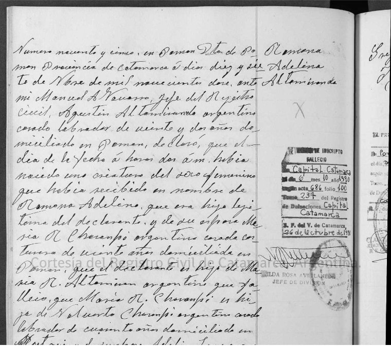
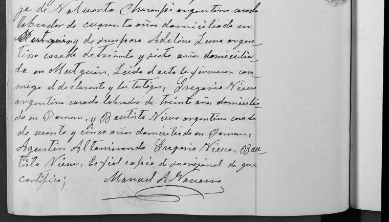

Acta de nacimiento
Registro Civil de Pomán. Partidas de nacimiento, tomo 6 (1911–1914), acta N.º 95.


Al margen: Ramona Adelina Altamiranda.
Número noventa y cinco. En Pomán, departamento de Pomán, provincia de Catamarca, a días diecisiete de noviembre de mil novecientos doce, ante mí, Manuel A. Navarro, Jefe del Registro Civil, Agustín Altamiranda, argentino, casado, labrador, de veintidós años, domiciliado en Pomán, declaró que el día de la fecha, a horas dos a. m., había nacido una criatura del sexo femenino que había recibido el nombre de Ramona Adelina, que era hija legítima del declarante y de su esposa María R. Chasampi, argentina, casada, costurera, de veinte (?) años, domiciliada en Pomán.
Que el declarante es hijo de María R. Altamiranda, argentina, que falleció. Que María R. Chasampi es hija de Norberto Chasampi, argentino, casado, labrador, de cuarenta años, domiciliado en Mutquín, y de su esposa Adelina Luna, argentina, casada, de treinta y siete años, domiciliada en Mutquín.
Leída el acta, la firmaron conmigo el declarante y los testigos Gregorio Nieva, argentino, casado, labrador, de treinta años, domiciliado en Pomán, y Bautista Nieva, argentino, casado (?), de veinticinco años, domiciliado en Pomán. Agustín Altamiranda. Gregorio Nieva. Bautista Nieva. Es fiel copia del original, de que certifico. Manuel A. Navarro.
Sello al margen, de 1990: "Inscripto falleció en Capital, Catamarca, el día 6, mes 10, año 1990. Acta 686, folio 100, tomo 237 del Registro de Defunciones Capital, Catamarca. S. F. del V. de Catamarca, 26 de octubre de 1990." Firma: Hilda Rosa Avellaneda, Jefe de División.
Qué aporta: el día, la hora y el lugar exactos de su nacimiento; sus cuatro abuelos (uno solo del lado de su padre, porque él era hijo natural); y, gracias al sello que se agregó al morir, la fecha y el lugar de su muerte. Confirma que sus abuelos maternos eran Norberto Chasampi y Adelina Luna, y de ahí viene su segundo nombre.